《机器学习技法》系列课程（二）
本章学习有关于对偶SVM的相关内容。
Motivation of Dual SVM
我们为什么要引入对偶形式的SVM？
我们在讲解线性SVM相关的内容的最后，对于处理非线性数据的SVM提出了这样的方法：通过特征变换，将非线性的数据变换到线性的Z空间，我们在Z空间中使用线性SVM。
然而，如果我们使用这样的方案，意味着我们的二次规划在处理问题时需要处理的条件是N变量就会有d’ + 1，这是Z空间的VC维度，如果d’太大了或者近乎无限，我们还能解决问题吗？
也因此，我们希望能够找到一种新的解决方法，将原有的SVM变换为一个等同的SVM，令这个SVM不再依赖于Z空间的d’，这就引出了我们本章所要讲述的内容：对偶SVM(Dual SVM)。
当然，这个变换中包含了复杂的数学内容，我们在这里只会介绍一些必要内容。
首先，我们做出这个变换所使用的关键工具是拉格朗日乘数法（Lagrange Multipliers）。对于这个方法我们并不陌生，除了在本科阶段的高等数学课堂上我们见过它的身影之外，在“机器学习基石”系列内容中，我们在介绍正则化（Regularization）时也使用了这个方法：我们在wTw <= C这个条件的限制下，最小化Ein(w)，我们将其使用拉格朗日乘数法将其等价为最小化Eaug：
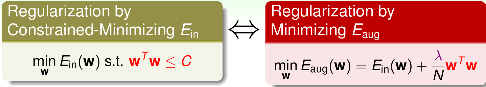
同样，我们也用同样的方法对对偶SVM进行处理，我们将N个条件转化为N个项的和，每一项的系数是α（SVM相关的文献通常是α，这与正则化不同，后者使用λ）。下图是原始的SVM问题：
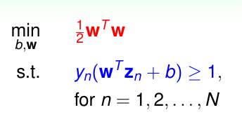
我们使用拉格朗日乘数法：
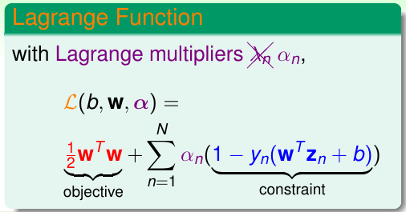
我们的对偶SVM所要处理的问题就是：
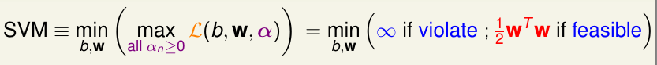
当然，我们需要证明这个新的方案和原始的是相同的，我们考虑两个情况：
- 对于任意不满足约束条件的w和b（也就是yn(wTzn + b) < 1），此时，我们如果最大化拉格朗日部分，其中(1 - yn(wTzn + b)) > 0，αn > 0，所以此时最大化，则此时趋近于无穷大。因为Dual SVM还有min操作，从而这种情况就会被过滤掉。
- 对于任意满足约束条件的w和b，此时(yn(wTzn + b)) < 0，如果取max，则α = 0，此时最终的结果就是min(1/2 * wTw)，这和原始问题是相同的。
从而，我们确定Dual SVM和原始的SVM是等价的！
Lagrange Dual SVM
首先，我们考虑下面的不等式是成立的：
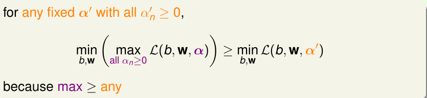
其次我们考虑另外一个不等式：
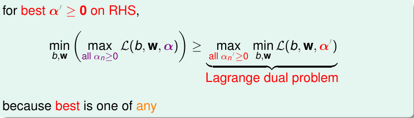
注意到此时在不等式右侧我们已经将max和min对调，我们将上述不等式右侧作为Dual SVM的下界，我们接下来针对其进行求解。在此之前我们先了解弱对偶和强对偶的概念:
对于上述表达式中，如果是>=，就是一个弱对偶问题。如果是=则是一个强对偶，如果这个等号成立，需要满足三个条件：
- 左侧函数是凸的（convex primal）
- 函数是有解的（feasible primal， 特征变换后线性可分）
- 条件是线性的（linear constrains）
因为二次规划问题满足上面三个条件，所以我们的Dual SVM的>=就可以变为=，即存在(b, w, a)令表达式两边同时达到最优！
现在我们优化我们的对偶问题：
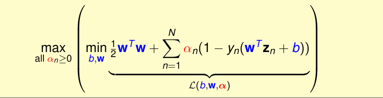
根据对lagrange求最小值，我们可以使用梯度下降法，而最下值梯度为0，所以化简主要有这几步：
- 对b求偏导数为0。
- 对w求偏导数为0。
通过代换我们可以化简为：
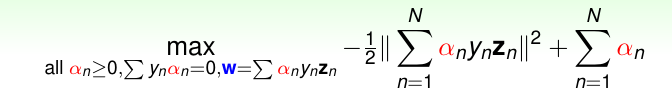
此时SVM的最优化仅仅和α有关！这些最优化的条件称为KKT（Karush-Kuhn-Tucker）。我们将使用
KKT通过最优的α来求解b和w。
Solving Dual SVM
首先我们将最大化问题转换为最小化问题：
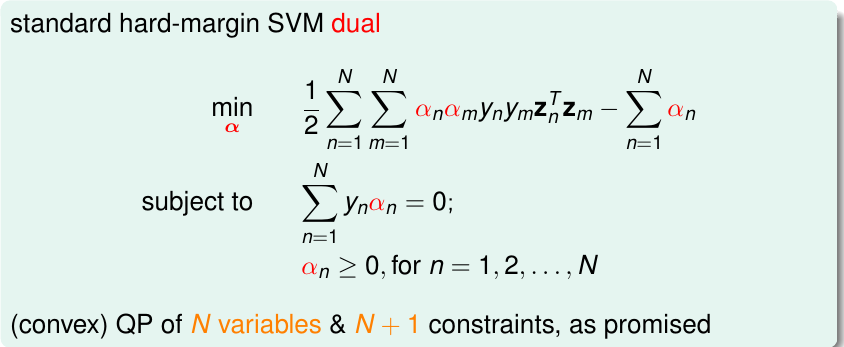
我们仍然利用QP(二次规划)来解决Dual SVM问题。
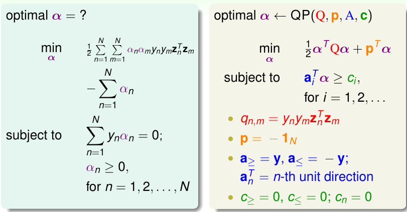
需要注意的是如果N很大，此时可能求解Qn需要很大的内存（此时是稠密矩阵，dense），因此需要一些特别的解决方案，比如不存储整个矩阵，或者利用一些特殊的条件来加速求解。
我们利用KKT条件来求解b和w：
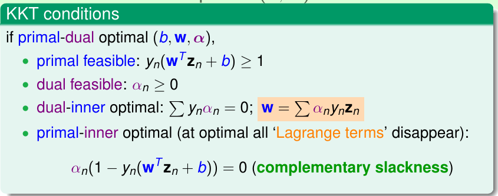
上面说明，如果我们获得了最优的α，那么我们也能容易获得最优的w。而对于b的计算，我们只能获得一个范围。然而，我们注意上图中最下面的等式，此时如果αn > 0 ⇒ b = yn − wTzn，此时这些点就是支撑向量，因为它们在胖胖线的边界上。
Messages Behind Dual SVM
我们回顾在上一讲中对于支撑向量的描述，我们说把位于边界线上的点称为支撑向量的候选者，而其他的点是不需要的。而如果αn > 0，此时的点一定落在边界上，所以它们一定是支撑向量（不是候选者了）。也就是说Support Vector是αn > 0时的点，它是Support Vector Candidates的一个子集。而SVM在学习这个最胖的分类界面时，只需要识别出这些支撑向量即可（使用Dual SVM）。这和PLA很类似，它是从错误的点学习分类界面，而Dual SVM从SV中学习。
下面是两种SVM的一个总结：
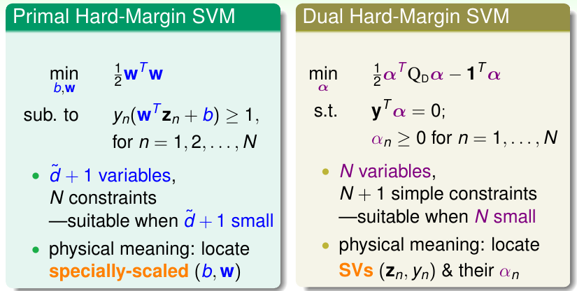
二者最终都是要找到一个最胖的超平面。
我们在本节中使用Dual SVM的方法，避免了Z空间的复杂度对计算的影响。然而，实际上这种影响我们并没有完全消除，它实际上在我们计算qmn过程中就隐藏在计算的过程中了，那么该怎么彻底消除它所带来的影响呢，这是接下来的课程要研究的内容(kernal function)！
文章内容和图片均来自“国立台湾大学林轩田老师”的《机器学习技法》课程！
— END —